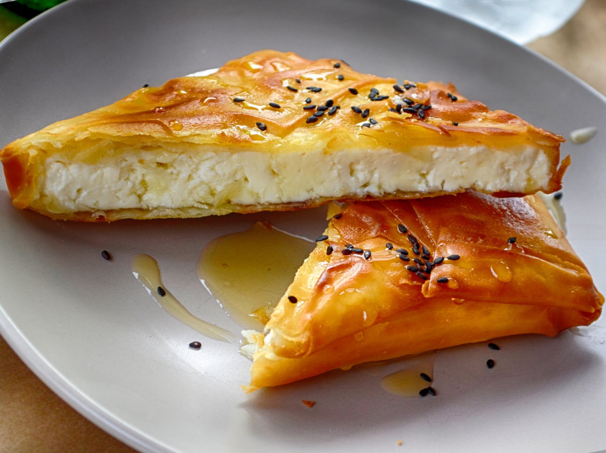

Torta Salgada De Batedeira Deliciosa

Image by Pixabay
Ingredientes (Massa)
- 2 xicaras de farinha de trigo
- 1 xicara de amido de milho
- 1 xicara de oleo
- 1/2 xicara de queijo ralado
- 2 ovos
- 2 xicaras de leite
- 2 envelopes de sazon
- 1 colher (sopa) de fermento em po
-
Recheio
- 1 lata de atum
- 1/2 xicaras de azeitonas
- 1 tomate picado
- 1/2 cebola picada
- 1 lata de ervilha e cenoura
- Oregano e cheiro verde a gosto
- Queijo ralado para polvilhar
Modo de preparo
- Bata na batedeira todos os ingredientes da massa, menos o fermento em po
- Desligue a batedeira e misture bem o fermento em po
- Escorra o liquido do atum e acrescente os outros ingredientes do recheio
- Misture
- Em uma assadeira ou refratario untado coloque metade da massa, recheio, restante da massa e polvilho queijo ralado
- Leve ao forno por aproximadamente 50 minutos, ate que doure.